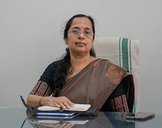

HOD PROFILE

Prof. Sreeja.K
Prof. Sreeja.K has obtained her Masters (MCA) from Govt Engineering College, Thrissur, Kerala . She joined Mohandas college of Engineering in 2003 as a System Analyst. Was in charge of Monitoring administration and analysis of the campus automation software , design and administration of campus network as well as data integration spreads across the institution. She is working as an Asst professor in the Dept of MCA from 2007 onwards . From 2014 onwards, she is also handling the duty of Head of Department of MCA.
Before joining MCET, she worked as System Analyst the State Project Director’s Office, DPEP, Trivandrum as head of state MIS unit of the project implementation body . Involved in educational planning, Budget preparation, Monitoring and analysis of key variables and data in the Project achievement in various fields and coordinating these inputs to overall project achievement. Also member of the National Implementation Team of – DISE (District Information System for Education).